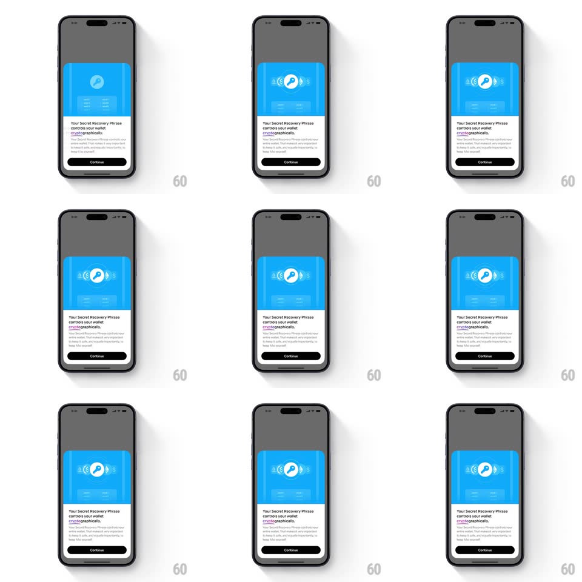

Media
Frame-by-frame

Rebuild this interaction 1:1: Family's onboarding key card - on the "Your Secret Recovery Phrase controls your wallet cryptographically" bottom sheet, the blue header illustration idles in an ambient loop: the central key icon pulses with expanding rings while small crypto-themed glyphs float and orbit gently around it.

Rebuild this interaction 1:1: Family's onboarding key card - on the "Your Secret Recovery Phrase controls your wallet cryptographically" bottom sheet, the blue header illustration idles in an ambient loop: the central key icon pulses with expanding rings while small crypto-themed glyphs float and orbit gently around it.
## Integration
Integration: stack-agnostic spec - springs given as stiffness/damping, timed motions as duration + curve; map every value to your framework and animation library of choice.
## Scene
Bottom sheet over a dimmed app: blue illustrated header panel (central key-in-circle icon with floating coin/glyph accents), title ("Your Secret Recovery Phrase controls your wallet cryptographically." with "cryptographically" highlighted), body text, Continue button.
## Motion spec
Pattern: pulsing key with floating satellite glyphs.
- The key icon pulses: soft rings expand outward from behind it (scale 1 -> 1.8, fade to 0, 2.4s loop, two rings staggered 1.2s apart) like sonar.
- The key itself breathes (scale 1 -> 1.04 -> 1, 2.4s).
- The small crypto glyphs around it float on individual loops (translateY +/-5px, 2-3s each, phase-offset) and drift slightly along short arcs.
- The sheet's text and button stay static - the loop lives only in the blue header.
## Calibration
- Rings fade out well before they hit the panel edges - contained, not radiating off-panel.
- Glyph motion is tiny - accents, not a particle field.
## Reduced motion
Static illustration; no rings, pulse, or float.
## Don't miss
- The two rings are staggered so one is always mid-expansion - never both firing together.
- The pulse originates behind the key circle, not from the panel center.